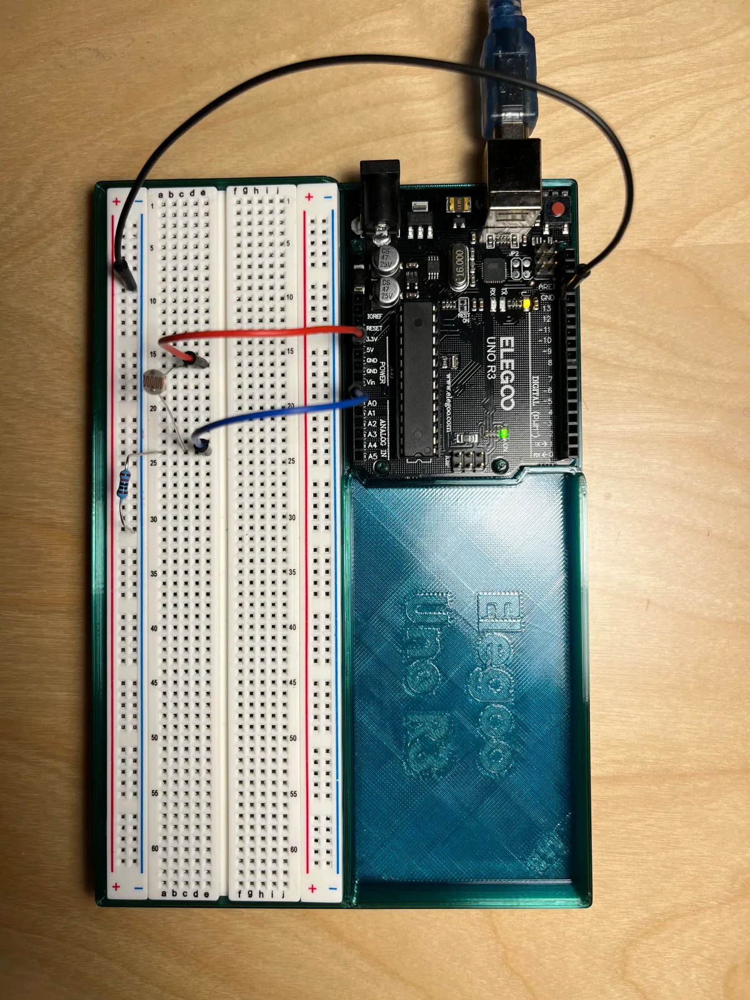
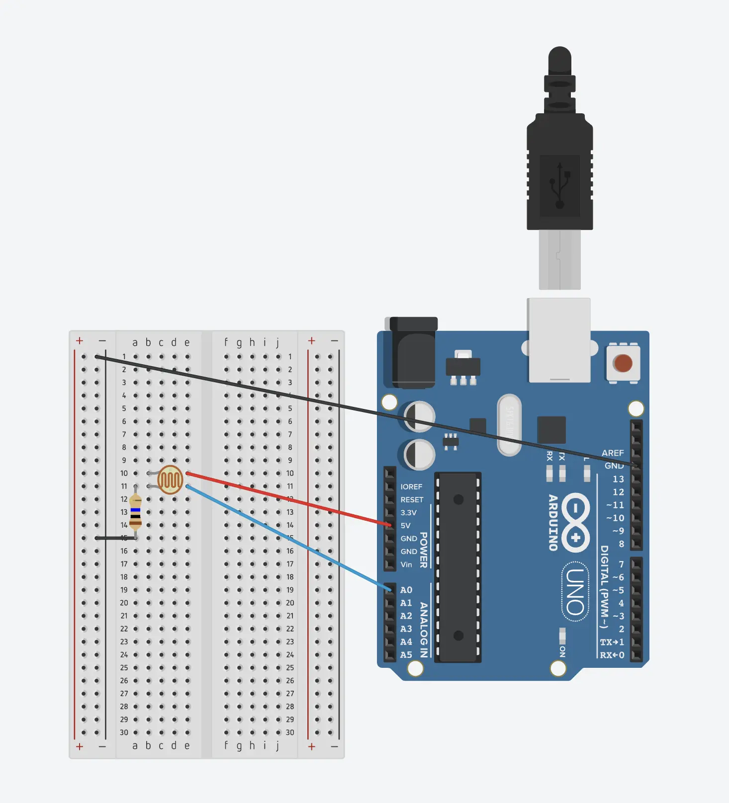
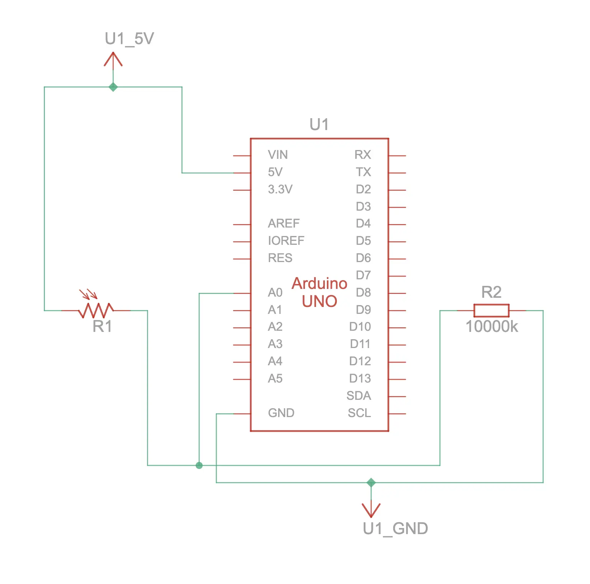

Light sensor (analog input): Connect the photo cell light sensor (CdS photoresistor) to your Arduino. Have your sketch continuously print out the light level it detects on the serial monitor at 5 second intervals.
CdS cells are little light sensors. As the squiggly face is exposed to more light, the resistance goes down. When it's light, the resistance is about ~1KΩ, when dark it goes up to ~10KΩ.
Top down view of breadboard and Arduino 
Circuit view 
Schematic drawing 
// Light sensor (analog input): Connect the photo cell light sensor (CdS photoresistor) to your Arduino. Have your sketch continuously print out the light level it detects on the serial monitor at 5 second intervals.
const int sensorLight = A0; // Photo cell (CdS photoresistor) Product ID: 161
const int readingDelay = 5000;
void setup() {
// To run once:
Serial.begin(9600); // debugging
}
void loop() {
// To run repeatedly:
int levelLight = analogRead(sensorLight); // Read amount of light and assign a variable to it
Serial.println(levelLight); // Print out the light level
delay(readingDelay); // Delay between readings
}
1.